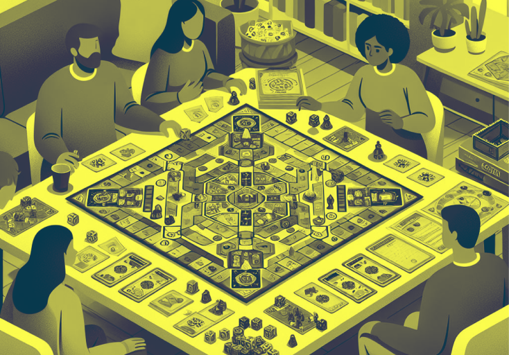

Plongez dans l'univers captivant des jeux de société, où chaque lancer de dé et chaque carte retournée sont l'occasion de créer des souvenirs inoubliables.
Les jeux de société, bien plus que de simples passe-temps, sont des outils qui favorisent les interactions sociales, stimulent la pensée critique et apportent un plaisir immense à travers le jeu. Aujourd'hui, les jeux se sont diversifiés pour inclure une variété de genres, allant des jeux de stratégie complexes aux jeux de cartes rapides.

Les jeux de société jouent un rôle essentiel dans notre société moderne, offrant bien plus qu'un simple divertissement. Ils favorisent l'interaction sociale, renforçant les liens entre amis et en famille, tout en développant des compétences cognitives importantes. Avec une grande variété de genres, il y a un jeu pour chaque joueur, qu'il soit compétitif ou coopératif.
Les jeux sont axés sur 3 axes sociaux :
Interactions sociales :
Les jeux de société créent des opportunités uniques pour rassembler les gens, qu'il s'agisse d'une soirée en famille ou d'une réunion entre amis. L'aspect social des jeux renforce les liens et offre un cadre pour partager des expériences.
Développement Cognitif :
Jouer à des jeux de société aide à développer des compétences essentielles comme la logique, la stratégie et la résolution de problèmes. Certains jeux encouragent même l'apprentissage de concepts mathématiques ou linguistiques d'une manière ludique.
Diversité des Genres :
Avec des milliers de jeux disponibles sur le marché, il existe un jeu pour chaque type de joueur. Que vous soyez un amateur de compétition intense ou que vous préfériez des jeux coopératifs, la variété est incroyable. Des jeux modernes comme "Catan", "Pandemic", et "Ticket to Ride" ont révolutionné l'industrie, attirant de nouveaux joueurs et rajeunissant les classiques.

Le marché des jeux de société connaît une renaissance, avec une augmentation des ventes et un intérêt croissant pour les jeux de société modernes. Des plateformes comme Kickstarter ont facilité la création et la distribution de nouveaux jeux, permettant aux concepteurs de réaliser leurs visions créatives. Parallèlement, des événements tels que les conventions de jeux attirent des milliers de passionnés chaque année, favorisant une communauté dynamique.

En conclusion, les jeux de société sont bien plus qu'un simple divertissement. Ils offrent une expérience riche qui combine amusement, apprentissage et socialisation. En explorant les différentes options disponibles, vous pouvez découvrir de nouveaux horizons dans le monde du jeu. Que vous soyez un vétéran ou un nouveau venu, il y a toujours quelque chose de nouveau à apprendre et à apprécier dans cet univers fascinant.
En découvrir plus :

L'évolution des jeux
Découvrez l'évolution des jeux de société, des premières tablettes d'argile aux classiques modernes. Explorez comment ces jeux ont su s'adapter aux nouvelles technologies tout en restant des outils de rassemblement et de divertissement.

Les différents types
Découvrez l'univers fascinant des jeux de société, où chaque type offre une expérience ludique unique. Plongez dans un monde riche en stratégies, en interactions et en créativité. Que vous soyez novice ou expert, cet article vous dévoilera la diversité des jeux qui peuvent enrichir vos soirées et renforcer vos liens sociaux.

Les jeux du futur
Découvrez à quoi pourraient ressembler les jeux de société du futur, intégrant innovation et interactivité. Imaginez des expériences immersives utilisant la réalité augmentée et l'intelligence artificielle tout en transformant le divertissement en favorisant les connexions sociales.